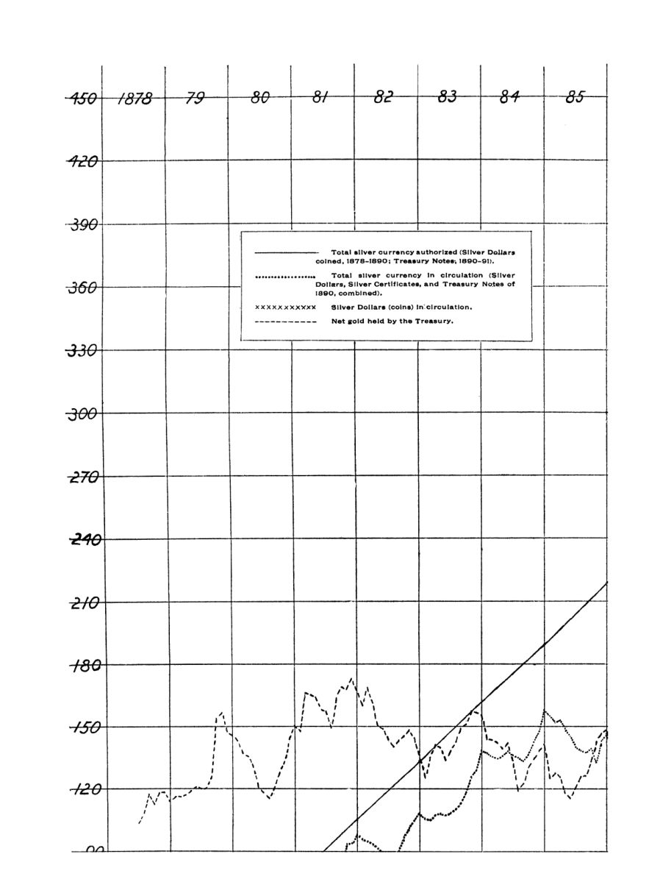

A prata que voltava ao Tesouro: Taussig e as leis de 1878 e 1890
Leitura: 10 min
Por treze anos, os EUA compraram prata e a transformaram em dinheiro. Taussig mostra que a moeda nova seguiu os preços em vez de puxá-los, e por que a lei de 1890 ameaçava o ouro do Tesouro.


Em março de 1878, a Casa da Moeda americana cunhou os primeiros dólares de prata da nova lei. Naquele mês, 190 mil moedas foram para as mãos do público; 810 mil ficaram no Tesouro. Os certificados de mil dólares tiveram destino pior: até junho de 1879, de US$ 7,8 milhões emitidos, 6,7 milhões já tinham voltado. Certificados emitidos em San Francisco voltavam ao governo em dez dias, pela alfândega de Nova York.
A cena abre a monografia de F. W. Taussig, professor assistente de economia política em Harvard, publicada em janeiro de 1892 pela American Economic Association. Foi escrita em novembro de 1891, em plena segunda experiência com a prata. A primeira parte examina o que de fato aconteceu com a moeda de prata; a segunda, o que o país deveria fazer com ela.
O que exigia a lei de 1878?
A lei de 1878, a Bland-Allison, obrigava o Tesouro a comprar prata em barras todo mês e cunhá-la em dólares de curso legal. Todos os secretários ficaram no mínimo: US$ 2 milhões em prata por mês. Com o metal em queda, a pouco mais de 80 centavos a onça em 1889, saíam em média cerca de 2,5 milhões de dólares de prata por mês, ou 30 milhões por ano.
Taussig insiste no ineditismo: os táleres alemães e as moedas de cinco francos também eram sobrevalorizados, mas eram resíduos de um padrão antigo, sem acréscimos. A lei não instituía bimetalismo: a cunhagem não era livre, e o lucro da diferença entre valor de face e valor do metal ficava com o Tesouro. Nasceu de um meio-termo que ninguém esperava duradouro, e durou mais de doze anos.
A teoria de manual previa que cada dose de prata expulsaria igual quantia de ouro. Não foi o que aconteceu, e Taussig conclui que a teoria de Ricardo segue intacta, mas pede cautela nas previsões.
Por que a prata voltava sempre ao Tesouro?
A chave estava nos bancos do Leste. Em novembro de 1878, a câmara de compensação de Nova York proibiu liquidar saldos entre bancos em prata, salvo pequenas somas. O Congresso derrubou a regra em 1882, mas o hábito ficou. Os bancos devolviam a prata ao governo pelo caminho mais curto: a alfândega. Como os certificados só existiam em valores a partir de dez dólares, a prata não alcançava o dinheiro miúdo do dia a dia, o único lugar onde poderia ficar.
As moedas encontraram um teto: mesmo com frete pago pelo governo, havia lugar para cerca de 60 milhões delas, e não mais.
O que aconteceu na crise de 1884-1886?
Entre 1878 e 1884 a prata circulou com facilidade. Safras fartas, exportações recordes e crédito em expansão abriram espaço. Os certificados em poder do público saltaram de menos de 8 milhões em agosto de 1880 para mais de 36 milhões em dezembro. Com a crise de maio de 1884, a prata em mãos do público estagnou até meados de 1886, enquanto a cunhagem seguia.
O Tesouro sobreviveu porque tinha superávit. Deixou de resgatar títulos de setembro de 1884 a dezembro de 1885 e guardou os certificados que entravam em vez de reemiti-los. O nervosismo girava em torno de uma linha de US$ 100 milhões de reserva em ouro, citada apenas numa cláusula de uma lei de 1882, mas tratada como limite sagrado.
A partir de 1886, as notas dos bancos nacionais encolheram rapidamente, porque a alta dos títulos públicos que lhes serviam de lastro eliminou o lucro da emissão. E uma lei de 30 de junho de 1886 autorizou certificados de prata de um, dois e cinco dólares. A prata finalmente entrou no bolso do público: no início de 1889, praticamente todos os dólares cunhados estavam em circulação, quase sempre na forma de certificados.
Quanto dinheiro novo o país absorvia?
Taussig chama de “troco graúdo” as notas e moedas de vinte dólares para baixo. Seu total passou de quase 500 milhões em 1878 para 773 milhões em 1890. Daí estima que o país absorvia de 20 a 30 milhões de dólares por ano nesses valores. É, admite, uma aproximação grosseira.
O que mudou com a lei de 1890?
A lei de 14 de julho de 1890, a Sherman Silver Purchase Act, revogou a de 1878 e, para Taussig, foi ainda mais notável: única na história monetária. O Tesouro passou a comprar 4,5 milhões de onças de prata por mês a preço de mercado, pagando com notas de curso legal. Era, segundo o diretor da Casa da Moeda, exatamente a produção americana de 1890: 54 milhões de onças por ano. Mas a diferença decisiva era o volume: cerca de 55 milhões de dólares por ano, mais do que o país podia absorver como troco graúdo.
Os bancos de Nova York, desta vez, aceitaram as novas notas. Ainda assim, depois da quebra do Barings, em novembro de 1890, e com a economia desaquecida, o papel se acumulou nos bancos, que pagavam o governo com ele e guardavam o ouro. O Tesouro manteve a promessa de pagar ouro a quem pedisse, conclui o autor, graças à tolerância dos bancos.
A prata causou a alta de preços?
A conclusão central contraria o senso comum. A expansão da prata acompanhou, e não precedeu, a alta de preços e a especulação. Quando a depressão chegou em 1884, a emissão regular não teve o menor efeito para contê-la; a prata simplesmente voltou ao Tesouro nos impostos. O mesmo se repetiu em 1890-91.
“O volume usado pelo público tem sido efeito, e não causa.” (“The volume used by the public has been effect and not cause.”)
A explicação é moderna. Nos Estados Unidos e na Inglaterra, o principal meio de pagamento já não era o dinheiro, mas o crédito bancário, sob a forma de depósitos e cheques. Os depósitos individuais nos bancos nacionais passaram de 615 milhões de dólares em 1878 para mais de 1,5 bilhão em 1890. E o crédito dependia do ânimo e das expectativas de bancos e empresários. Fora das reservas bancárias, a prata não alimentou o crédito. Notas de um, cinco e dez dólares tinham virado uma espécie de moeda subsidiária: sua quantidade era determinada pelos preços, não o contrário.
Isso não absolvia a lei de 1890: a longo prazo, admite Taussig, mais moeda leva a mais crédito e a preços mais altos. Emissões excessivas acabariam por expulsar o ouro, numa recessão pela drenagem externa, num boom pela inflação do crédito. A cunhagem livre apressaria a quebra do padrão-ouro, mas não traria a alta de preços na velocidade que seus defensores prometiam.
O padrão-ouro era injusto com os devedores?
Na segunda parte, Taussig enfrenta o melhor argumento adversário. Pelo índice de Soetbeer, com 114 artigos em Hamburgo e base 100 em 1847-50, os preços caíram de 138,28 em 1873 para 102,20 em 1887. Os bimetalistas diziam que isso refletia a valorização do ouro, agravada pela adesão da Alemanha ao ouro em 1873. Taussig aceita o fato e contesta as consequências: os preços caíram com a produtividade, e salários e rendas nominais subiram. O devedor pagava com uma renda que não havia caído.
A exceção era o agricultor das terras antigas. Ferrovias e navios a vapor abriram as planícies do Oeste e as pastagens da Austrália, e o preço dos grãos caiu sem que seu campo produzisse mais. Quem esperava pagar um dólar de juros com um alqueire de trigo descobriu que precisava de dois. Somavam-se dívidas da era do papel-moeda, ciclos de especulação com terras e a dura transição para a agricultura intensiva. A agitação da prata tinha raízes reais; o remédio é que estava errado.
Sua objeção final é moral e mira a própria agitação da prata, que não vinha dos argumentos dos economistas bimetalistas.
“Nasce da inquietação e da ignorância.” (“It is born of restlessness and ignorance.”)
Em cada depressão, parte do público atribui tudo a uma causa única, a tarifa, as ferrovias ou a moeda, e a panaceia mais comum é mais dinheiro. Taussig responde com a frase que resume o livro:
“a estabilidade é a primeira qualidade exigida do meio de troca” (“stability is the first quality needed in the medium of exchange”)
Como saída prática, endossa a proposta do Sr. Fairchild: emitir moeda de prata sem cota fixa e parar sempre que a prata morta voltasse a se acumular no Tesouro.
Na minha leitura
Na minha leitura, a monografia vale menos pelo veredito sobre a prata e mais pelo método. Taussig segue a moeda pelas alfândegas, pelas câmaras de compensação e pelos cofres do Tesouro, e descobre que o quanto o público retém é escolha do público; o resto volta ao emissor. É uma descrição precoce da moeda endógena e do limite de empurrar liquidez onde não há demanda.
O ponto mais atual é fiscal. O Tesouro de 1885 aguentou porque tinha superávit e pôde guardar o que entrava; o de 1891 já não tinha, e passou a depender da boa vontade dos bancos. A credibilidade de uma regra monetária, então como agora, mede-se pela folga das contas de quem a sustenta.
Glossário
- certificado de prata
- papel emitido pelo Tesouro contra dólares de prata guardados em seus cofres, usado como dinheiro.
- prata morta
- dólares de prata cunhados que ficavam parados no Tesouro porque o público não os absorvia.
- greenbacks
- notas do governo americano emitidas na Guerra Civil, conversíveis em ouro a partir de 1879.
- troco graúdo
- termo de Taussig para notas e moedas de vinte dólares para baixo, usadas no varejo.
- câmara de compensação
- associação em que os bancos liquidam entre si os cheques e saldos do dia.
- cunhagem livre
- regime em que qualquer pessoa pode levar metal à Casa da Moeda e recebê-lo em moeda, sem limite.
- bimetalismo
- padrão monetário com ouro e prata cunhados livremente a uma razão legal fixa.
- ágio do ouro
- prêmio que o ouro passa a valer sobre o papel quando o governo deixa de convertê-lo ao par.
Fontes
- The Silver Situation in the United States (pp. 7–118). JSTOR · Internet Archive (PDF)
- Sumário da edição no JSTOR: Publications of the American Economic Association, vol. 7, nº 1.
Documento em domínio público (EUA, publicado antes de 1931), via JSTOR Early Journal Content e Internet Archive. Resumo e comentário do autor deste site, sem afiliação com a American Economic Association. Encontrou um erro? Escreva: a correção é publicada no próprio texto, com data.
← Nº 31 · Trinta e quatro comissões, nenhum padrão: a regulação ferroviária de 1891 Nº 33 · Seligman, 1892: quem realmente paga o imposto? →